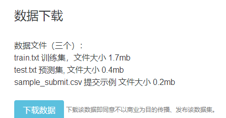

本文封面来自网络，文章内容原创，只允许在bilibili和知乎以及本人博客(www.weathon.top/blog)发布(后续可能扩大发布范围，以本人博客为准)，且在哔哩哔哩首发。
(本文是我编写代码编记录的，思路是根据我写代码的思路来的)
之前无意间看到了一个Python库，可以判断姓名的性别，感觉非常有趣，想看看到底是怎么做到的，结果在查找资料的时候看到了一个比赛：http://sofasofa.io/competition.php?id=3(数据竞赛：机器读中文：根据名字判断性别)
比赛介绍
简单思考之后，我有了一下3种思路：
· 1）生成词向量，再使用KNN或者SVM等机器学习方法进行判断
· 2）统计每一个字在男女姓名中出现的比重，然后把测试的名字拆开成每一个字，去统计的字典中比较，看是男还是女的概率大
· 3）直接使用Python汉字姓名库进行处理
第3种方法很明显属于作弊，我并不想这么做，对于第一种方法，生成词向量是一个麻烦活，可以考虑使用百度的SDK。最终我选择先用第二种方法做一下，同时我觉得还记录每一个字在名(姓氏与性别无关，此处样本已经帮我们忽略)字中的位置会效果更佳。
说干就干，首先下载数据。

数据下载
数据规格
考虑到编码问题，这里准备用python 3来处理，但发现给的文件编码有问题，还是用PY2来处理了。
还有一点是需要处理的，就是数据文件的第一行是表头，这个我们是不需要的，所以可以用分片去掉，同时测试的时候还需要将数据分片一部分出来做测试。
写到一半时我突然发现：万一名字里面的字统计字典两种没有呢？想到这里我瞬间慌了，忍不住看了一下标程，发现我这种方法是可行的，但是还需要一个处理：名字中两个字都没有的，就随机生成一个答案。
然后来做测试数据，题目给出了一个csv的样板，这是一个“逗号分隔符”表格文件(简单科普一下，这样的文件由半角逗号代表列的分割，回车换行代表行的分割)，我们可以用Excel或者WPS打开，但为了方便，我用记事本阅读其文本形式。
用记事本打开的形式
为了更加准确地判断，我还是决定用Excel打开看看
Excel的查看结果
我就说嘛，为什么看得一头雾水，原来是记事本自动去掉了换行，这种情况估计各位编码时也遇到过，这是因为“换行”和“回车”是有区别的，详细情况我就不说了，有兴趣的话可以自行查找资料。
这里和读取文件一样，千万不要忘记了处理表头。
（写代码死机了好多次，还是用回Linux吧。）
由于测评结果要等2小时，所以不在这里展示了，唉，这段代码花了我2h。
最后，希望大家可以关注投币，还可以去我的博客http://www.weathon.top/blog/ 看看哦